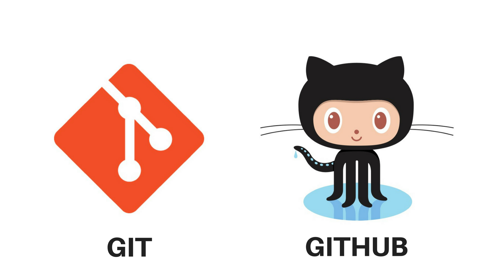
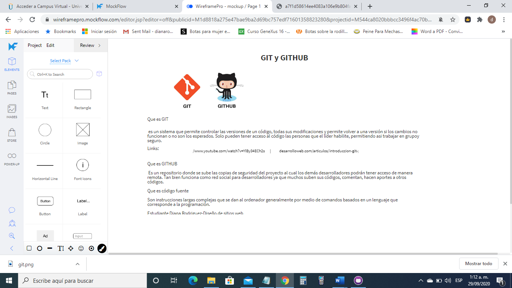

logo de la unad
logo de la unad
Materiales
Texto de introducción a Git y Github
video ¿qué es git y github?
imágenes
Contenido

iconos de git y github
Que es GIT
es un sistema que permite controlar las versiones de un código, todas sus modificaciones y permite volver a una versión si los cambios no funcionan o no son los esperados. Solo pueden tener acceso al código las personas que el líder habilite, permitiendo asi trabajar en grupo y seguro.
Que es GITHUB
Es un repositorio donde se sube las copias de seguridad del proyecto al cual los demás desarrolladores podrán tener acceso de manera remota. Tan bien funciona como red social para desarrolladores ya que muchos suben sus códigos, comentan, hacen aportes a otros códigos.
definicion ¿qué es git y github?
Que es código fuente
Son instrucciones largas complejas que se dan al ordenador generalmente por medio de comandos basados en un lenguaje que corresponde a la programación.
Texto de introducción a Git y Github

imagen del la creacion del mockup